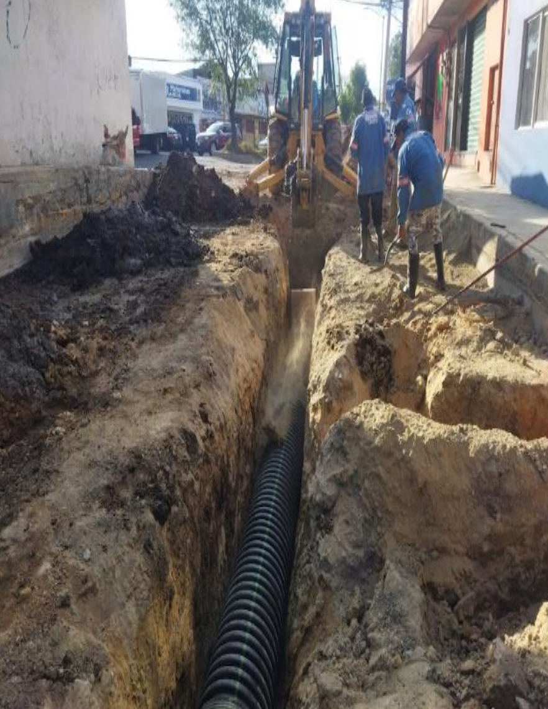
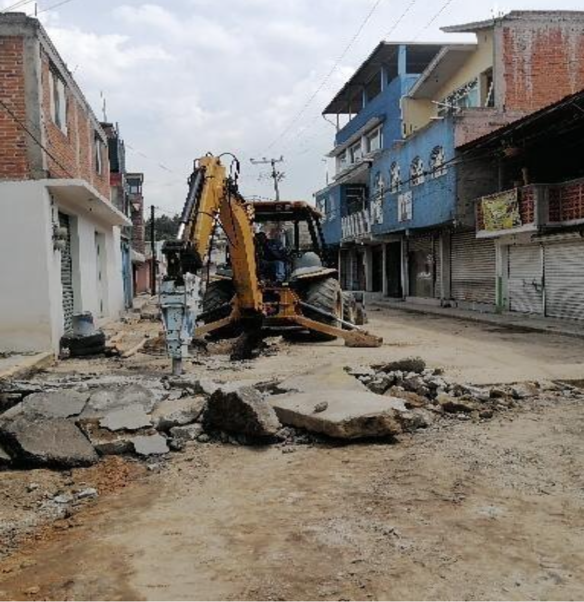

REHABILITACIÓN DE DRENAJE SANITARIO, RED O SISTEMA DE AGUA ENTUBADA Y REHABILITACIÓN DE CONCRETO ASFALTICO DE AV.MIRASOL, TRAMO DE CARRETERA LAGO DE GUADALUPE A LA AV. SAN JOSÉ EL JARAL, COLONIA SAN JOSÉ EL JARAL, Atizapán de Zaragoza,Estado de México.

